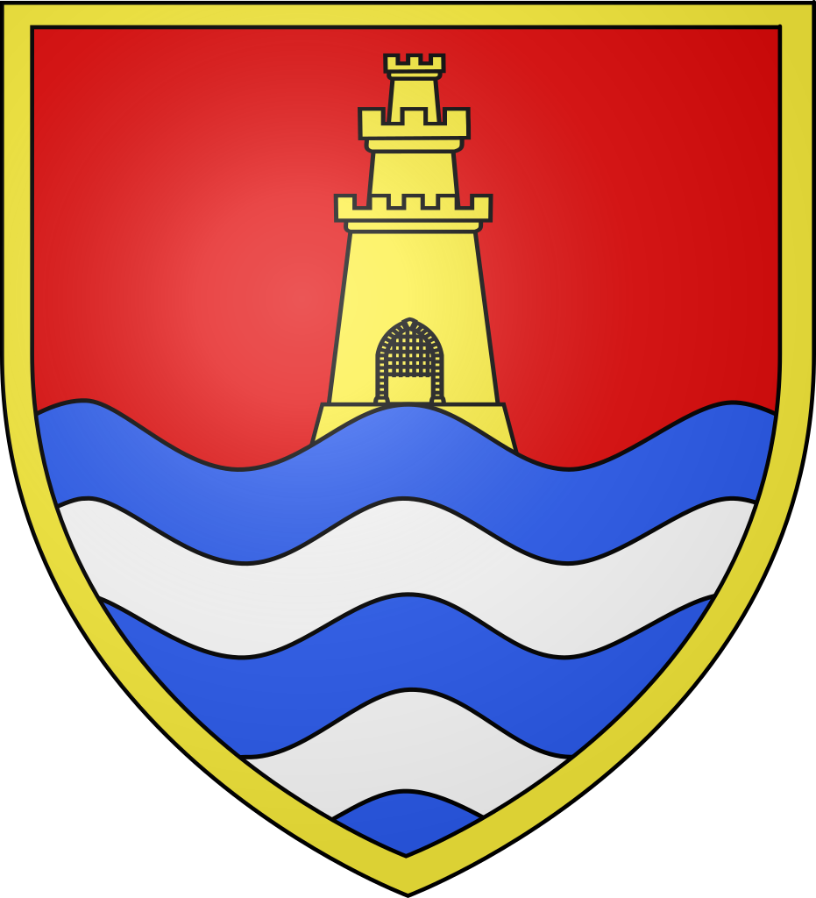

Les associations
Football : AS Méziré/Fesches-le-Châtel
M. VILLEMIN André
19 rue du bois bourgeois - 25200 MONTBELIARD
06 70 47 37 03
Amicale des Educateurs U.S. Fesches :
RUFFONI Frédéric 13 rue des roches- 25550 BAVANS
03 81 97 51 86
PRATI Jean-Marie
1 impasse Paul Emile Victor - 25200 GRAND-CHARMONT
03 81 94 06 45
Ski et Montagne :
MORASCHETTI Marie-Hélène 14 rue des Arvoiges - 25460 ETUPES
03 81 93 27 11
Tennis Club :
GENTILHOMME Nicole 7 rue du Parc -
25490 FESCHES-LE-CHATEL
03 81 96 12 88
Hathor : Cours danse Moderne-jazz
Mme BOILLOT Sylvie
11 route de Méziré - 25490 FESCHES-LE-CHATEL
06 60 32 37 10
Tennis de table :
BARBIER François
7 rue Neuve - 25460 ETUPES
03 81 94 19 74
Gym-Santé et Step de Fesches : (gymnastique et danse...)
BONTEMPS Evelyne
4 rue des Boulets Montants - 25490 FESCHES-LE-CHATEL
06 21 90 56 79
Spirit Country de Fesches-le-Châtel :
PEUGEOT Monique
1 rue des Roses - 25490 FESCHES-LE-CHATEL L
03 81 93 03 90
mail : spiritcountry.club25@gmail.com
Comité des Fêtes :
ALCON Patrick
58 rue de Verdun - 25490 FESCHES-LE-CHATEL
06 78 07 86 92
Association Communale de chasse :
BENIER Cédric
1 Clos des moitrances - 25490 FESCHES-LE-CHATEL
03 81 93 27 81
A.A.P.P.M.A. :
CUENOT Jean-Luc
29 rue des Voironnes - 25490 FESCHES-LE-CHATEL
06.80.61.77.26
Les Amis de l'école :
SCHMITT Aurore
4 rue des Grands Champs - 25490 FESCHES-LE-CHATEL
06.33.74.17.11
Fédération Combattants Républicains :
FAROLFI Jean-Pierre
4 le pré des corvées - 90100 FECHE L'EGLISE
03.84.56.36.67
F.N.A.C.A. et Comité de liaison du Monde Combattants:
LAMBERT Jean
10 rue de Verdun - 25490 FESCHES-LE-CHATEL
03 81 93 00 11
Amicale des Donneurs de Sang :
VILAPLANA Rolande
28 rue de la source - 25600 DAMBENOIS
03.81.32.03.03
Club 3ème âge ''Les Cailloulus" :
RENAUDE Gilbert
48 avenue du Gal De Gaulle - 25460 ETUPES
03 81 94 11 80
Foyer des Jeunes :
PONS Geneviève
34 rue Emile Beley - 25460 ETUPES
03 81 95 15 39
ACEPU Association Cultuelle de l'église protestante unie de FLC :
EGREMY André
13 impasse Bellevue- 25490 FESCHES-LE-CHATEL
03 81 96 16 50
La Saint-Laurent :
BOUZAT Daniel
1 rue de la gare - 25490 FESCHES LE CHÂTEL
09 50 88 92 13
Secours Catholique:
NEDEZ Gérard
7 rue du camping - 25490 FESCHES LE CHÂTEL
Ligue contre le Cancer :
DEBROSSE Alain
3 rue Octave Japy - 25490 FESCHES-LE-CHATEL
03 81 93 87 81
Les Petits-Pas :
FABBRI Laurence
5A impasse P. Lucien Muller - 25490 FESCHES-LE-CHATEL
03 81 99 76 63
EEUdF (éclaireurs unionistes) :
GUEHL Nicolas
12 rue des Chardonnerets BP21 - 25700 VALENTIGNEY
Les Tupins :
HAENSLER Monique
22 rue du Parc - 25490 FESCHES-LE-CHATEL
09 54 30 21 99
Scraptoutdoubs :
ROTA Laëtitia
15 rue Louis Dormoy - 25490 FESCHES-LE-CHATEL
06 88 44 56 34
L'atelier des Mamies :
PEUGEOT Jacqueline
12 grande rue - 25490 ALLENJOIE
03 81 93 05 24
France Lyme :
JUILLARD DEHOS Annie
51 bis rue de Verdun - 25490 FESCHES-LE-CHATEL
06.37.77.20.72
ARPAC :
SCANETTI Gérard
3 bis rue de Bourogne - 25490 ALLENJOIE
06 82 08 25 33